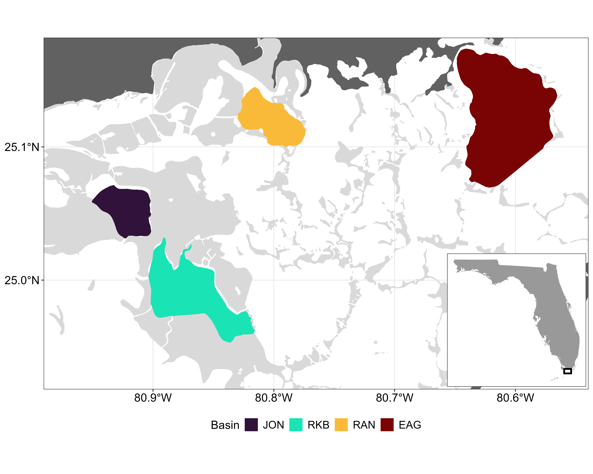
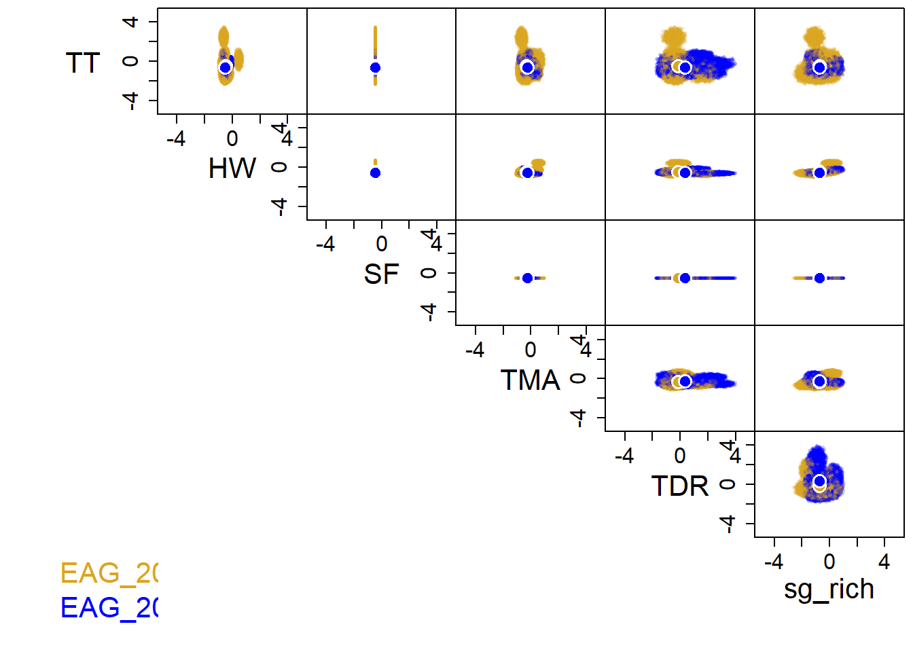
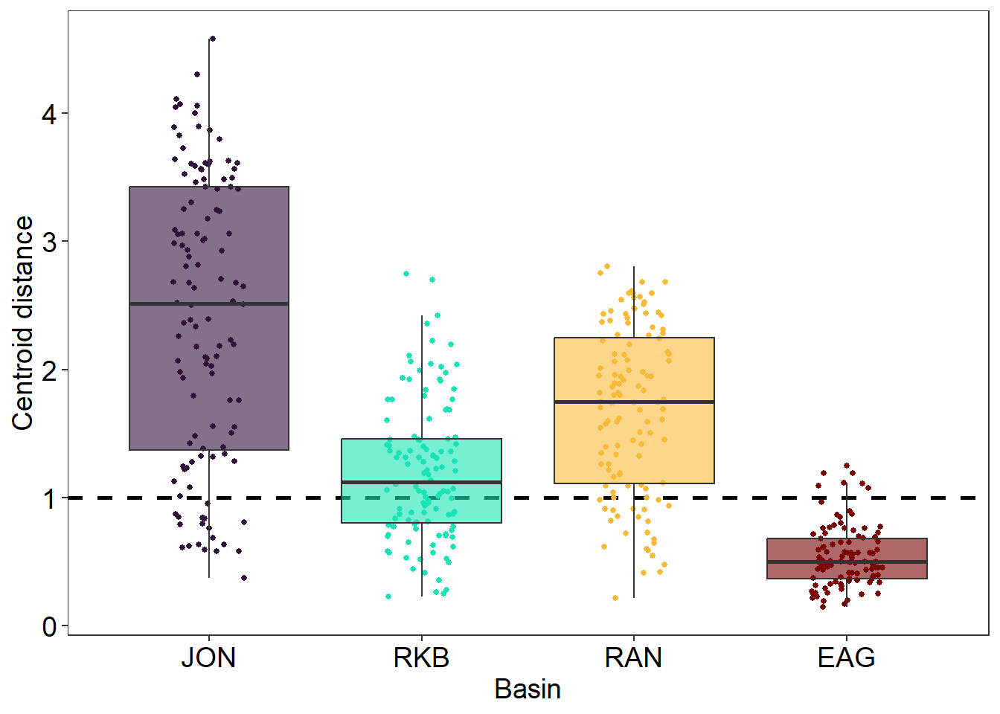
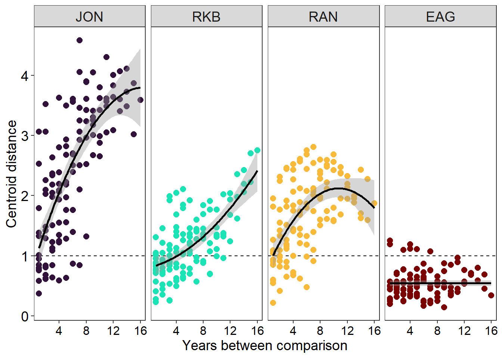
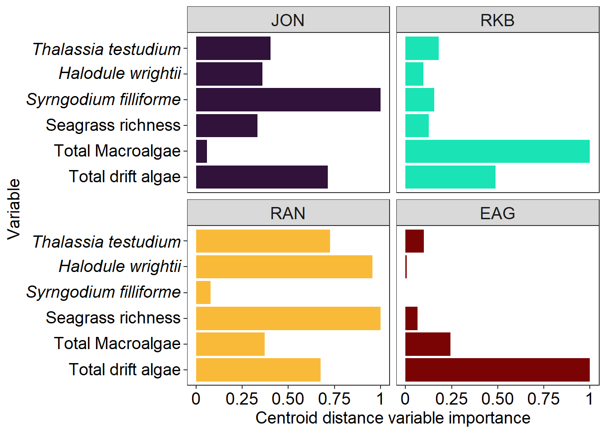

# load libraries
library(tidyverse)
library(hypervolume)
## Loading required package: Rcpp
# load sav monitoring data
df = read_csv('data/FLbay_SAV.csv')
## Rows: 1919 Columns: 9
## ── Column specification ────────────────────────────────────────────────────────
## Delimiter: ","
## chr (1): BASIN
## dbl (8): YEAR, STATION, TT, HW, SF, TMA, TDR, sg_rich
##
## ℹ Use `spec()` to retrieve the full column specification for this data.
## ℹ Specify the column types or set `show_col_types = FALSE` to quiet this message.
head(df)
## # A tibble: 6 × 9
## BASIN YEAR STATION TT HW SF TMA TDR sg_rich
## <chr> <dbl> <dbl> <dbl> <dbl> <dbl> <dbl> <dbl> <dbl>
## 1 EAG 2007 1 0.135 0 0 0.0262 0 1
## 2 EAG 2007 2 0.0986 0 0 0.0471 0 1
## 3 EAG 2007 3 0.15 0 0 0.03 0 1
## 4 EAG 2007 4 0.3 0 0 0.07 0 1
## 5 EAG 2007 5 0.03 0.005 0 0.03 0 1.17
## 6 EAG 2007 6 0.206 0 0 0.0262 0.0188 1Example 1: Stability of seagrass ecosystems in Florida Bay
Stability of seagrass ecosystems in Florida Bay
This vignette uses hypervolumes to understand the temporal stability of seagrass ecosystems. Hypervolumes are generated using common seagrass monitoring metrics yearly from 2007-2023 across four basins in Florida Bay, USA. Centroid distance is used to compare mean conditions across all years to determine temporal stability and variable importance is calculated to determine the metric driving stability within each basin.
data
The data used for this example comes from the South Florida Fisheries Habitat Assessment Program which monitors seagrass habitats annually using quadrat samples. The benthic cover data consists of data from 4 basins and measures 6 metrics of the SAV community. Data is averaged across stations for each metric.
- BASIN = Basin sampled
- YEAR = year of monitoring
- STATION = monitoring station
- TT = Thalassia testudium percent cover
- HW = Halodule wrightii percent cover
- SF = Syringodium filliforme percent cover
- TMA = total macroalgae percent cover
- TDR = total drift algae percent cover
- sg_rich = seagrass species richness

Prepare data
Because hypervolumes can be generated with any continuous data as an axes, many of the times the units are not combatible. Blonder et al. 2014 & 2018 to convert all of the axes into the same units. This can be done by taking the z-score of the values to convert units into standard deviations. Z-scoring data can be done with the formula: \[ z = \frac{x_{i}-\overline{x}}{sd} \] Where \(x_{i}\) is a value, \(\overline{x}\) is the mean, and \(sd\) is the standard deviation. By z-scoring each axis, 0 is the mean of that axis, a value of 1 means that the value is 1 standard deviation above the global mean of that axis, and a value of -1 is 1 standard deviation below the global mean of the axis. In R this can be done manually or with the scale() function.
Hypervolumes cannot be made when all values for a single axis are the same (e.g. all values 0 for a species cover in a basin for a year), so we can add a tiny bit of variation in order to make the hypervolume.
We then can nest() the data to take advantage of the purr package and map().
# z-score and nest data to make hypervolume
set.seed(14)
df = df |>
# z score data across all sites and years
mutate(across(c(TT:sg_rich), scale),
# add tiny amount so when all values the same can make hv
across(c(TT:sg_rich),
~map_dbl(., ~. + rnorm(1, mean = 0, sd = 0.0001)))) |>
# remove station from dataset
select(-STATION) |>
# nest data by basin and year
group_by(BASIN, YEAR) |>
nest()
head(df)
## # A tibble: 6 × 3
## # Groups: BASIN, YEAR [6]
## BASIN YEAR data
## <chr> <dbl> <list>
## 1 EAG 2007 <tibble [31 × 6]>
## 2 EAG 2008 <tibble [31 × 6]>
## 3 EAG 2009 <tibble [31 × 6]>
## 4 EAG 2010 <tibble [31 × 6]>
## 5 EAG 2011 <tibble [31 × 6]>
## 6 EAG 2012 <tibble [31 × 6]>Generate hypervolumes
Hypervolumes are a multidimensional tool that is based on Hutchinson’s n-dimensional niche concept and we can build them with the hypervolume package.
With a nested dataset of our columns that we want to build hypervolumes for we can use mutate() and map() to generate the hypervolume.
We can also use map() and get_centroid() to extract centroid values of each hypervolume.
# generate hypervolumes
df = df |>
mutate(hv = map(data, \(data) hypervolume_gaussian(data, name = paste(BASIN,YEAR,sep = '_'),
samples.per.point = 1000,
kde.bandwidth = estimate_bandwidth(data),
sd.count = 3,
quantile.requested = 0.95,
quantile.requested.type = "probability",
chunk.size = 1000,
verbose = F)),
centroid = map(hv, \(hv) get_centroid(hv)))** Do not try to open dataframe with hv column it will hang because it is too big
head(df)
## # A tibble: 6 × 5
## # Groups: BASIN, YEAR [6]
## BASIN YEAR data hv centroid
## <chr> <dbl> <list> <list> <list>
## 1 EAG 2007 <tibble [31 × 6]> <Hypervlm> <dbl [6]>
## 2 EAG 2008 <tibble [31 × 6]> <Hypervlm> <dbl [6]>
## 3 EAG 2009 <tibble [31 × 6]> <Hypervlm> <dbl [6]>
## 4 EAG 2010 <tibble [31 × 6]> <Hypervlm> <dbl [6]>
## 5 EAG 2011 <tibble [31 × 6]> <Hypervlm> <dbl [6]>
## 6 EAG 2012 <tibble [31 × 6]> <Hypervlm> <dbl [6]>If wanting to save you can save output as .rds
saveRDS(df, 'data/SAV_hvs.rds') plotting hypervolumes
We can plot multiple hypervolumes by joining them together
hvj = hypervolume_join(df$hv[[1]], df$hv[[2]])
plot(hvj, pairplot = T, colors=c('goldenrod','blue'),
show.3d=FALSE,plot.3d.axes.id=NULL,
show.axes=TRUE, show.frame=TRUE,
show.random=T, show.density=TRUE,show.data=F,
show.legend=T, limits=c(-5,5),
show.contour=F, contour.lwd= 2,
contour.type='alphahull',
contour.alphahull.alpha=0.25,
contour.ball.radius.factor=1,
contour.kde.level=0.01,
contour.raster.resolution=100,
show.centroid=TRUE, cex.centroid=2,
point.alpha.min=0.2, point.dark.factor=0.5,
cex.random=0.5,cex.data=1,cex.axis=1.5,cex.names=2,cex.legend=2,
num.points.max.data = 100000, num.points.max.random = 200000, reshuffle=TRUE,
plot.function.additional=NULL,
verbose=FALSE
)
Centroid distance
We can use the centroid distance to compare mean conditions between years to understand the stability. Centroid distance can be calculated by a set of hypervolumes. This can be done by creating a data frame with all of the possible year combinations, and merging dataframes together to easily join. We can subtract the centroids from each comparison to generate the centroid difference of each axis.
# comparison of across each year
df_y= tibble(y1 = unique(df$YEAR),
y2 = unique(df$YEAR)) |>
expand(y1,y2)
# make all unique year comparisons
df_y = df_y[!duplicated(t(apply(df_y,1,sort))),] %>%
filter(!(y1 == y2))
# make two df to join all unique comparisons
df1 = df |>
select(BASIN, y1 = YEAR, hv1 = hv, cent1 = centroid)
df2 = df |>
select(BASIN, y2 = YEAR, hv2 = hv, cent2 = centroid)
# create data frame of all data and make yearly comparisons
df_cd = tibble(BASIN = rep(unique(df$BASIN),
each = nrow(df_y)),
y1 = rep(df_y$y1, times = length(unique(df$BASIN))),
y2 = rep(df_y$y2, times = length(unique(df$BASIN)))) |>
inner_join(df1, by = c('BASIN', 'y1')) |>
inner_join(df2, by = c('BASIN', 'y2')) |>
mutate(ychange = y2-y1,
# join hypervolumees in a set for centroid distance
set = map2(hv1,hv2, \(hv1, hv2) hypervolume_set(hv1, hv2, check.memory = F, verbose = F)),
# calculate centroid distance
dist_cent = map2_dbl(hv1, hv2, \(hv1,hv2) hypervolume_distance(hv1, hv2, type = 'centroid', check.memory=F)),
# calculate the difference of centroid of each axis
dif = map2(cent1, cent2, \(cent1,cent2) cent2 - cent1)) |>
#unnest centroid differences
unnest_wider(dif) |>
# select only metrics of interest
select(BASIN, y1, y2, ychange,
dist_cent, TT, HW, SF, sg_rich, TMA, TDR)
# save output
write_csv(df_cd, 'data/SAV_centDist.csv')## Rows: 465 Columns: 11
## ── Column specification ────────────────────────────────────────────────────────
## Delimiter: ","
## chr (1): BASIN
## dbl (10): y1, y2, ychange, dist_cent, TT, HW, SF, sg_rich, TMA, TDR
##
## ℹ Use `spec()` to retrieve the full column specification for this data.
## ℹ Specify the column types or set `show_col_types = FALSE` to quiet this message.df_cd
## # A tibble: 465 × 11
## BASIN y1 y2 ychange dist_cent TT HW SF sg_rich TMA
## <chr> <dbl> <dbl> <dbl> <dbl> <dbl> <dbl> <dbl> <dbl> <dbl>
## 1 EAG 2007 2008 1 0.502 -0.109 -0.0440 -1.15e-5 0.0104 0.0467
## 2 EAG 2007 2009 2 0.493 -0.262 -0.0265 -5.03e-5 -0.0846 0.0631
## 3 EAG 2007 2010 3 0.576 -0.174 -0.0810 -3.60e-5 -0.143 0.303
## 4 EAG 2007 2011 4 0.616 -0.210 -0.0625 -2.13e-5 -0.0286 0.572
## 5 EAG 2007 2012 5 0.373 -0.150 -0.0462 -3.45e-5 0.0162 0.329
## 6 EAG 2007 2013 6 0.227 -0.140 -0.0291 9.11e-6 0.0763 0.0580
## 7 EAG 2007 2014 7 0.454 -0.409 -0.0134 -2.21e-5 -0.0539 0.0827
## 8 EAG 2007 2015 8 0.564 -0.445 -0.0243 1.43e-5 0.00913 0.315
## 9 EAG 2007 2016 9 0.490 -0.320 -0.0981 -1.55e-5 -0.170 0.169
## 10 EAG 2007 2017 10 0.339 -0.210 -0.0607 -2.36e-5 -0.0816 -0.0509
## # ℹ 455 more rows
## # ℹ 1 more variable: TDR <dbl>Plot centroid distance for each basin.
df_cd = read_csv('data/SAV_centDist.csv') |>
mutate(BASIN = factor(BASIN, levels =
c('JON', 'RKB', 'RAN', 'EAG')))
## Rows: 465 Columns: 11
## ── Column specification ────────────────────────────────────────────────────────
## Delimiter: ","
## chr (1): BASIN
## dbl (10): y1, y2, ychange, dist_cent, TT, HW, SF, sg_rich, TMA, TDR
##
## ℹ Use `spec()` to retrieve the full column specification for this data.
## ℹ Specify the column types or set `show_col_types = FALSE` to quiet this message.
ggplot(df_cd, aes(BASIN, dist_cent, fill = BASIN))+
geom_hline(aes(yintercept = 1), linetype = 'dashed', linewidth = 1)+
geom_point(aes(color = BASIN), size = 1,
position=position_jitterdodge(dodge.width = 1, jitter.width = 1))+
# geom_errorbar(aes(ymin = lc, ymax = uc), linewidth = 2, width = 0)+
geom_boxplot(alpha = 0.6, outliers = F)+
labs(x = 'Basin', y = 'Centroid distance')+
scale_fill_viridis_d(option = 'turbo')+
scale_color_viridis_d(option = 'turbo')+
theme_bw()+
theme(axis.title = element_text(size = 14),
axis.text = element_text(size = 14, colour = "gray0"),
plot.title = element_text(size = 14, hjust=0.5),
panel.grid.major = element_blank(),
panel.grid.minor = element_blank(),
legend.position = 'none',
legend.title = element_text(size = 14),
strip.text.x = element_text(size = 14),
legend.text = element_text(size = 12))
Trend in stability
We can look across the number of years to understand the trend in stability. By fitting three possible models we can determine the trend of time of the centroid distance. When intercept model is the best, we can determine that the trend is static and not changing with the number of years between comparison. If linear, the centroid distance can indicate a shift in state overtime, and a quadratic with a maximum at middle values can indicate a disturbance with recovery in state.
library(MuMIn)
df_cd = df_cd |>
group_by(BASIN) |>
nest() |>
# fit intercept, linear, and quadratic model
mutate(m_int = map(data, \(df)lm(dist_cent~1, data = df)),
m_lin = map(data, \(df)lm(dist_cent~ychange, data = df)),
m_quad = map(data, \(df)lm(dist_cent~ychange + I(ychange^2), data = df)),
AICc_int = map_dbl(m_int, \(x) AICc(x)),
AICc_lin = map_dbl(m_lin, \(x) AICc(x)),
AICc_quad = map_dbl(m_quad, \(x) AICc(x)),
model = case_when(
AICc_int - min(c(AICc_int,AICc_lin,AICc_quad)) <= 4 ~ 'Intercept',
AICc_lin < AICc_quad ~ 'Linear',
AICc_quad < AICc_lin ~ 'Quadratic'))
# unnest data
d = df_cd |>
select(BASIN, data, model) |>
unnest(cols = c(data)) |>
mutate(BASIN = factor(BASIN, levels =
c('JON', 'RKB', 'RAN', 'EAG')))
ggplot(d, aes(ychange, dist_cent, color = BASIN))+
geom_hline(aes(yintercept = 1), linetype = 'dashed')+
geom_point(size = 2.5)+
geom_smooth(data = d |> filter(model == 'Intercept'),
method = 'lm', formula = y~1,
linewidth = 1, color = 'black')+
geom_smooth(data = d |> filter(model == 'Linear'),
method = 'lm', formula = y~x,
linewidth = 1, color = 'black')+
geom_smooth(data = d |> filter(model == 'Quadratic'),
method = 'lm', formula = y~x+I(x^2),
linewidth = 1, color = 'black')+
facet_wrap(~BASIN, nrow = 1)+
labs(x = 'Years between comparison', y = 'Centroid distance')+
scale_color_viridis_d(option = 'turbo')+
theme_bw()+
theme(axis.title = element_text(size = 14),
axis.text.y = element_text(size = 14, colour = "black"),
axis.text.x = element_text(size = 12, colour = "black"),
plot.title = element_text(size = 14, hjust=0.5),
panel.grid.major = element_blank(),
panel.grid.minor = element_blank(),
legend.position = 'none',
legend.title = element_text(size = 14),
strip.text.x = element_text(size = 14),
legend.text = element_text(size = 12))
Variable importance
Becuase centroid distance is the multivariate difference in mean conditions between hypervolumes, we can determine the influence of each axis on the overall change. This can be done by removing an axis and calculating the euclidean distance without that axis. Using the formula \[ imp_x = cd/cd_x - 1\] where \(imp_x\) is the importance of axis \(x\), \(cd\) is centroid distance with all axes, and \(cd_x\) is the centroid distance excluding axis \(x\).
# pivot data longer
df_c = read_csv('data/SAV_centDist.csv') |>
mutate(across(TT:TDR, \(x) x^2)) |>
pivot_longer(TT:TDR, names_to = 'axis', values_to = 'dist')
## Rows: 465 Columns: 11
## ── Column specification ────────────────────────────────────────────────────────
## Delimiter: ","
## chr (1): BASIN
## dbl (10): y1, y2, ychange, dist_cent, TT, HW, SF, sg_rich, TMA, TDR
##
## ℹ Use `spec()` to retrieve the full column specification for this data.
## ℹ Specify the column types or set `show_col_types = FALSE` to quiet this message.
# create vector of unique axes
ax = unique(df_c$axis)
# for loop to calculate variable importance of each axis
for(i in 1:length(ax)){
d = df_c |>
# remove axis
filter(axis != ax[i]) |>
group_by(BASIN,y1,y2,ychange,dist_cent) |>
#calculate euclidean distance without axis
summarise(cd = sqrt(sum(dist))) |>
# calculate importance of axis
mutate(imp = (dist_cent/cd) - 1,
axis = ax[i])
# bind data into new data frame to store
if(i == 1){
df_imp = d
}else{
df_imp = bind_rows(df_imp, d)
}
}
## `summarise()` has grouped output by 'BASIN', 'y1', 'y2', 'ychange'. You can
## override using the `.groups` argument.
## `summarise()` has grouped output by 'BASIN', 'y1', 'y2', 'ychange'. You can
## override using the `.groups` argument.
## `summarise()` has grouped output by 'BASIN', 'y1', 'y2', 'ychange'. You can
## override using the `.groups` argument.
## `summarise()` has grouped output by 'BASIN', 'y1', 'y2', 'ychange'. You can
## override using the `.groups` argument.
## `summarise()` has grouped output by 'BASIN', 'y1', 'y2', 'ychange'. You can
## override using the `.groups` argument.
## `summarise()` has grouped output by 'BASIN', 'y1', 'y2', 'ychange'. You can
## override using the `.groups` argument.
# calculate relative importance across all years for each basin
df_cdi = df_imp |>
#filter(ychange == 1) |>
group_by(BASIN,axis) |>
summarize(imp = mean(imp)) |>
group_by(BASIN) |>
mutate(s_imp = imp/max(imp))|>
mutate(BASIN = factor(BASIN, levels =
c('JON', 'RKB', 'RAN', 'EAG')),
axis = factor(axis, levels = c('TDR', 'TMA', 'sg_rich',
'SF', 'HW', 'TT')))
## `summarise()` has grouped output by 'BASIN'. You can override using the
## `.groups` argument.
# labeler function for plotting
y_label_formatter = function(x) {
ifelse(x %% 1 == 0, formatC(x, format = "f", digits = 0), formatC(x, format = "f", digits = 2))
}
ggplot(df_cdi, aes(axis, s_imp, fill = BASIN))+
geom_col()+
labs(x = 'Variable', y = 'Centroid distance variable importance')+
coord_flip()+
theme_bw()+
facet_wrap(~BASIN, nrow = 2)+
scale_y_continuous(
breaks = c(0.0, 0.25, 0.5, 0.75, 1.0),
limits = c(0, 1),
labels = y_label_formatter) +
scale_x_discrete(labels = c('Total drift algae', 'Total Macroalgae', 'Seagrass richness',
expression(italic('Syrngodium filliforme')),
expression(italic('Halodule wrightii')),
expression(italic('Thalassia testudium'))))+
scale_fill_viridis_d(option = 'turbo')+
theme(axis.title = element_text(size = 14),
axis.text = element_text(size = 14, colour = "gray0"),
plot.title = element_text(size = 14, hjust=0.5),
panel.grid.major = element_blank(),
panel.grid.minor = element_blank(),
legend.position = 'none',
legend.title = element_text(size = 14),
strip.text.x = element_text(size = 14),
legend.text = element_text(size = 12))
Background info
Merge/Join
If two data frames contain different columns of data, then they can be merged together with the family of join functions.
+left_join() = uses left df as template and joins all matching columns from right df +right_join() = uses right df as template and joins all matching columns from left df +inner_join() = only matches columns contained in both dfs +full_join() = combines all rows in both dfs
library(tidyverse)
## ── Attaching core tidyverse packages ──────────────────────── tidyverse 2.0.0 ──
## ✔ dplyr 1.1.4 ✔ readr 2.1.5
## ✔ forcats 1.0.0 ✔ stringr 1.5.1
## ✔ ggplot2 3.5.1 ✔ tibble 3.2.1
## ✔ lubridate 1.9.3 ✔ tidyr 1.3.1
## ✔ purrr 1.0.2
## ── Conflicts ────────────────────────────────────────── tidyverse_conflicts() ──
## ✖ dplyr::filter() masks stats::filter()
## ✖ dplyr::lag() masks stats::lag()
## ℹ Use the conflicted package (<http://conflicted.r-lib.org/>) to force all conflicts to become errors
left = tibble(name = c('a', 'b', 'c'),
n = c(1, 6, 7),
bio = c(100, 43, 57))
right = tibble(name = c('a', 'b', 'd', 'e'),
cals = c(500, 450, 570, 600))
left_join(left, right, by = 'name')
## # A tibble: 3 × 4
## name n bio cals
## <chr> <dbl> <dbl> <dbl>
## 1 a 1 100 500
## 2 b 6 43 450
## 3 c 7 57 NA
right_join(left, right, by = 'name')
## # A tibble: 4 × 4
## name n bio cals
## <chr> <dbl> <dbl> <dbl>
## 1 a 1 100 500
## 2 b 6 43 450
## 3 d NA NA 570
## 4 e NA NA 600
inner_join(left, right, by = 'name')
## # A tibble: 2 × 4
## name n bio cals
## <chr> <dbl> <dbl> <dbl>
## 1 a 1 100 500
## 2 b 6 43 450
full_join(left, right, by = 'name')
## # A tibble: 5 × 4
## name n bio cals
## <chr> <dbl> <dbl> <dbl>
## 1 a 1 100 500
## 2 b 6 43 450
## 3 c 7 57 NA
## 4 d NA NA 570
## 5 e NA NA 600
# multiple matches
fish = tibble(species = rep(c('Salmon', 'Cod'),times = 3),
year = rep(c(1999,2005,2020), each = 2),
catch = c(50, 60, 40, 50, 60, 100))
col = tibble(species = c('Salmon', 'Cod'),
coast = c('West', 'East'))
left_join(fish, col, by = 'species')
## # A tibble: 6 × 4
## species year catch coast
## <chr> <dbl> <dbl> <chr>
## 1 Salmon 1999 50 West
## 2 Cod 1999 60 East
## 3 Salmon 2005 40 West
## 4 Cod 2005 50 East
## 5 Salmon 2020 60 West
## 6 Cod 2020 100 Eastscaling data
Because hypervolumes can be generated with any continuous data as an axes, many of the times the units are not combatible. Blonder et al. 2014 & 2018 to convert all of the axes into the same units. This can be done by taking the z-score of the values to convert units into standard deviations. Z-scoring data can be done with the formula: \[ z = \frac{x_{i}-\overline{x}}{sd} \] Where \(x_{i}\) is a value, \(\overline{x}\) is the mean, and \(sd\) is the standard deviation. By z-scoring each axis, 0 is the mean of that axis, a value of 1 means that the value is 1 standard deviation above the global mean of that axis, and a value of -1 is 1 standard deviation below the global mean of the axis. In R this can be done manually or with the scale() function.
fish = tibble(species = rep(c('Salmon', 'Cod'),times = 3),
year = rep(c(1999,2005,2020), each = 2),
catch = c(50, 60, 40, 50, 60, 100))
#
fish = fish |>
mutate(zcatch1 = (catch - mean(catch))/sd(catch), # manual
zcatch2 = scale(catch)) # with scale
fish
## # A tibble: 6 × 5
## species year catch zcatch1 zcatch2[,1]
## <chr> <dbl> <dbl> <dbl> <dbl>
## 1 Salmon 1999 50 -0.477 -0.477
## 2 Cod 1999 60 0 0
## 3 Salmon 2005 40 -0.953 -0.953
## 4 Cod 2005 50 -0.477 -0.477
## 5 Salmon 2020 60 0 0
## 6 Cod 2020 100 1.91 1.91
# center = mean, scale = sd
fish$zcatch2
## [,1]
## [1,] -0.4767313
## [2,] 0.0000000
## [3,] -0.9534626
## [4,] -0.4767313
## [5,] 0.0000000
## [6,] 1.9069252
## attr(,"scaled:center")
## [1] 60
## attr(,"scaled:scale")
## [1] 20.97618nesting data
One benefit of tibbles is that they can contain list columns. This means that we can make columns of tibbles that are nested within a dataset. Nesting creates a list-column of data frames; unnesting flattens it back out into regular columns. Nesting is a implicitly summarising operation: you get one row for each group defined by the non-nested columns. This is useful in conjunction with other summaries that work with whole datasets, most notably models. This can be done with the nest() and then flattened with unnest()
fish = tibble(species = rep(c('Salmon', 'Cod'),times = 3),
year = rep(c(1999,2005,2020), each = 2),
catch = c(50, 60, 40, 50, 60, 100))
# using group_by
fish_nest = fish |>
group_by(species) |>
nest()
fish_nest
## # A tibble: 2 × 2
## # Groups: species [2]
## species data
## <chr> <list>
## 1 Salmon <tibble [3 × 2]>
## 2 Cod <tibble [3 × 2]>
fish_nest$data
## [[1]]
## # A tibble: 3 × 2
## year catch
## <dbl> <dbl>
## 1 1999 50
## 2 2005 40
## 3 2020 60
##
## [[2]]
## # A tibble: 3 × 2
## year catch
## <dbl> <dbl>
## 1 1999 60
## 2 2005 50
## 3 2020 100
# using .by in nest
# column name becomes data unless you change .key
fish_nest2 = fish |>
nest(.by = year, .key = 'df')
fish_nest2
## # A tibble: 3 × 2
## year df
## <dbl> <list>
## 1 1999 <tibble [2 × 2]>
## 2 2005 <tibble [2 × 2]>
## 3 2020 <tibble [2 × 2]>
fish_nest2$df
## [[1]]
## # A tibble: 2 × 2
## species catch
## <chr> <dbl>
## 1 Salmon 50
## 2 Cod 60
##
## [[2]]
## # A tibble: 2 × 2
## species catch
## <chr> <dbl>
## 1 Salmon 40
## 2 Cod 50
##
## [[3]]
## # A tibble: 2 × 2
## species catch
## <chr> <dbl>
## 1 Salmon 60
## 2 Cod 100map
purr
The newest and new standard package with tidyverse is purr with its set of map() functions. Some similarity to plyr (and base) and dplyr functions but with more consistent names and arguments. Notice that map function can have some specification for the type of output. + map() makes a list. + map_lgl() makes a logical vector. + map_int() makes an integer vector. + map_dbl() makes a double vector. + map_chr() makes a character vector.
df = iris |>
select(-Species)
#summary statistics
map_dbl(df, mean)
## Sepal.Length Sepal.Width Petal.Length Petal.Width
## 5.843333 3.057333 3.758000 1.199333
# using map with mutate and nest
d = tibble(species = rep(c('Salmon', 'Cod'),times = 3),
year = rep(c(1999,2005,2020), each = 2),
catch = c(50, 60, 40, 50, 60, 100)) |>
nest(.by = species) |>
mutate(correlation = map(data, \(data) cor.test(data$year, data$catch)))
d
## # A tibble: 2 × 3
## species data correlation
## <chr> <list> <list>
## 1 Salmon <tibble [3 × 2]> <htest>
## 2 Cod <tibble [3 × 2]> <htest>
d$correlation
## [[1]]
##
## Pearson's product-moment correlation
##
## data: data$year and data$catch
## t = 0.96225, df = 1, p-value = 0.5122
## alternative hypothesis: true correlation is not equal to 0
## sample estimates:
## cor
## 0.6933752
##
##
## [[2]]
##
## Pearson's product-moment correlation
##
## data: data$year and data$catch
## t = 1.963, df = 1, p-value = 0.3
## alternative hypothesis: true correlation is not equal to 0
## sample estimates:
## cor
## 0.8910421